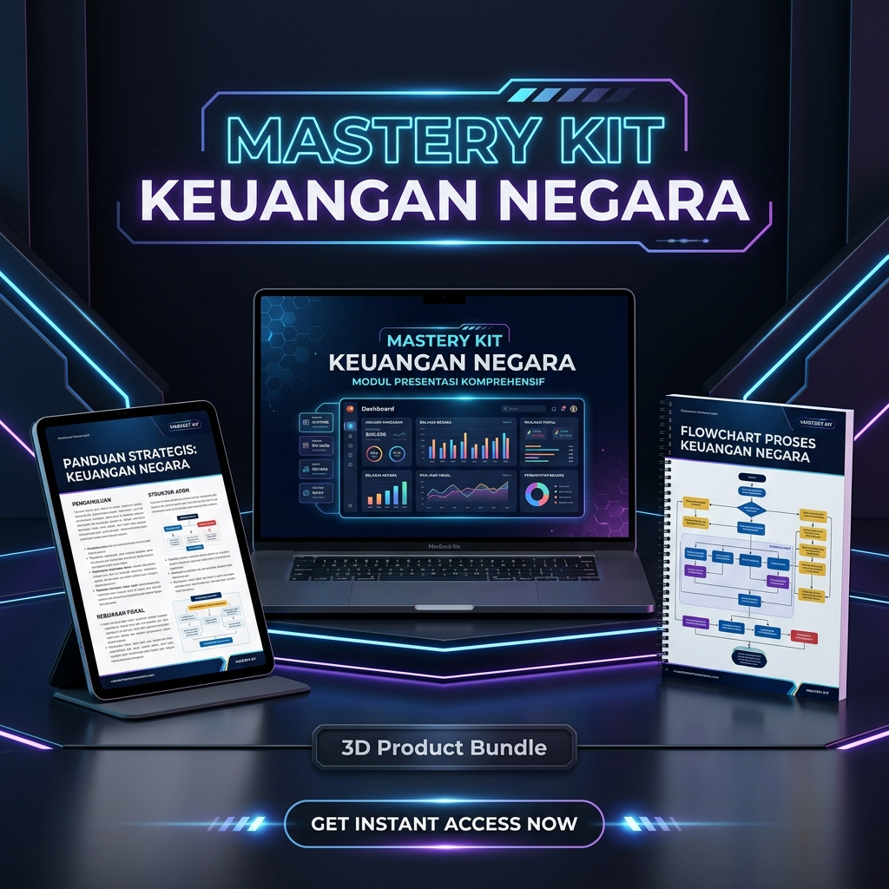

Lewati kebingungan membaca teks hukum yang kaku. Dapatkan resume taktis PP 50/2018 & PMK 62/2023, visual flowchart alur anggaran untuk skripsi, dan template slide PowerPoint sidang siap pakai.

Membaca lembaran negara asli PP Keuangan Negara adalah tantangan tersendiri.
Istilah hukum dan birokrasi di dokumen asli sangat bertele-tele dan sulit diterjemahkan ke bahasa akademis skripsi.
Butuh waktu berminggu-minggu hanya untuk memahami isi PP 50/2018 & PMK 62/2023 yang berimbas pada tertundanya bab tinjauan pustaka.
Dosen penguji tahu titik-titik lemah mahasiswa, terutama mengenai alur pelaksanaan anggaran rill dan IKPA.
Isi paket dipecah menjadi 3 folder taktis yang siap menyelamatkan tugas, skripsi, atau pekerjaan Anda.
Penjelasan ringkas pasal-pasal krusial PP 50/2018 & PMK 62/2023. Lengkap dengan 10 Pertanyaan Jebakan Dosen Penguji beserta skrip jawaban taktis untuk mengunci nilai A saat sidang.
Kumpulan diagram alur pelaksanaan anggaran (SPP-SPM-SP2D) dan alur revisi anggaran sesuai PMK 62/2023. Tinggal copy-paste langsung ke Bab II atau Bab III skripsi Anda.
File mentahan template PowerPoint minimalis modern. Sudah terstruktur slide-by-slide lengkap dengan poin bedah regulasi dan Skrip Pembicara di kolom notes. Tinggal baca saat presentasi!
Ini bukan sekadar gambar diagram biasa. Alur yang disajikan didesain berdasarkan proses bisnis riil pada instansi pemerintah (SAKTI & KPPN) sehingga tidak akan disalahkan oleh dosen pembimbing.
Menunjukkan pembagian peran yang tepat antara PPK (Pengujian Material) dan PPSPM (Pengujian Formal).
Siklus pengiriman ADK dari SAKTI hingga KPPN menerbitkan perintah pencairan dana ke Bank Operasional.
Klik pertanyaan di bawah ini untuk melihat contoh jawaban taktis yang terdapat di dalam Resume Taktis Folder 1.
Cara Jawab Taktis: "Izin menjawab Bapak/Ibu. PP 50/2018 memang memfasilitasi lelang pra-DIPA untuk mempercepat kontrak sebelum Januari. Namun di lapangan, deviasi tetap terjadi karena faktor non-teknis, seperti keterlambatan juknis kegiatan dari instansi pusat, perubahan prioritas satker di tengah jalan, atau lambatnya administrasi internal dalam merevisi RPD di halaman III DIPA agar sesuai dengan progres riil fisik pekerjaan."
Cara Jawab Taktis: "Kondisi ini menunjukkan inefisiensi belanja yang parah. Berdasarkan PMK 62/2023 yang mengutamakan prinsip Value for Money, Satker tersebut dinilai berkinerja buruk. Pagu anggaran mereka untuk tahun berikutnya berpotensi dikurangi (punishment) oleh Kemenkeu karena tidak efisien dalam menerjemahkan input dana menjadi output kinerja fisik."
Cara Jawab Taktis: "Tidak semuanya, Bapak/Ibu. PMK 62/2023 mendebirokratisasi kewenangan revisi. Menkeu (DJA) hanya mengurusi revisi yang mengubah total pagu nasional atau kebijakan strategis. Untuk pergeseran anggaran antar-satker dalam satu eselon, kewenangannya didelegasikan ke Eselon I K/L. Sedangkan revisi administratif internal satker (seperti pergeseran akun belanja operasional sejenis) sepenuhnya didelegasikan langsung ke Kuasa Pengguna Anggaran (KPA) Satker."
Jangan biarkan waktu berharga Anda habis bergadang membaca dokumen hukum ratusan halaman atau dibantai dosen penguji saat sidang karena salah menjawab alur APBN.
Zipped File (Resume PDF, PPTX Slide, PNG Flowcharts)
Informasi tambahan mengenai format produk dan metode pengiriman.
Ya. File presentasi disediakan dalam format Microsoft PowerPoint (.pptx) mentah tanpa proteksi, sehingga Anda bebas mengganti warna, font, logo, atau menambahkan nama kampus Anda.
Kami menyediakan file gambar PNG dengan latar belakang transparan serta format PDF. Anda tinggal menarik/menyisipkannya ke dokumen Word skripsi Anda. Kami juga menyertakan teks kode Mermaid.js jika Anda ingin memodifikasinya sendiri.
Sangat valid. Resume dan diagram disusun langsung berdasarkan regulasi resmi Kemenkeu yang berlaku saat ini (PP 50/2018 dan PMK 62/2023) oleh praktisi pengelola keuangan sektor publik.
Setelah mengklik tombol unduh dan menyelesaikan transaksi simulasi pembayaran, Anda akan langsung diarahkan ke halaman download file ZIP yang berisi 3 folder lengkap.
Silakan masukkan email Anda untuk mensimulasikan proses pembelian digital dan mendapatkan link download file produk.